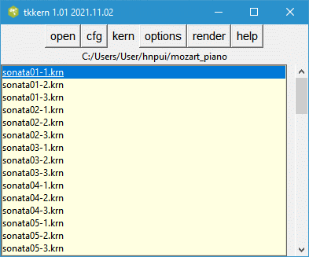
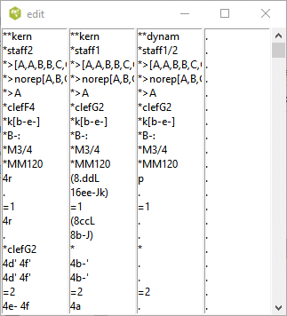

There are over 100,000 music files encoded in **kern data format. This includes the large database of early music and polish scores.
The **kern format was developed for the humdrum software package to analyze the music. Software to convert this format to MEI, music XML, SVG and ABC notation format are part of the Humdrum software library.
Many of the **kern files have been converted into abc music notation format which you can find here. The translation to abc notation format is not perfect and some presentation information may be lost. The Verovio project has produced JavaScript software for converting the **kern files into music scores that can run on all computer systems.
The JavaScript Toolkit Library verovio toolkit allows you to render a kern file embedded in your web page to a music score. Unlike the Humdrum Notation Plugin, the JavaScript code can run directly in your computer, rather than on a remote server. This program contains the tcl/tk code which selects the input kern file to be embedded into the web page. The score is inserted into a temporary web page (html file) with the included commands to convert the embedded file into an svg representation of the score plugin. The html file is then forwarded to your favourite browser. The user has access to the various options which control the layout of the score in the html file. In addition the user interface allows you to view the input kern file either in a plain text editor, or in a graphics window.
The user can create portable html web page which loads the JavaScript code from a remote server. This file would work on any system. If the user wishes to run this program without internet access, then the JavaScript code can be loaded directly from your own computer.
This application provides a convenient way of displaying kern files on your browser and experimenting with the various options described in the documentation.
To run this software, you require Tcl/Tk the interpreter, either 8.5 or 8.6. This frequently comes with the Linux or OS operating system or can be easily installed. Details on acquiring this interpreter can be found on https://www.tcl.tk/software/tcltk/download.html if it is missing from your system.
After downloading tkkern.tcl and tooltip.tcl, you should create a separate folder for example tkkern, and put these files in that folder. You may also need to include the JavaScript verovio-toolkit-wasm.js. When you run tkkern.tcl, it will create or update the initialization file tkkern.ini where all you configuration information will be stored. When you render a tune, it will create a temporary html file in your folder which will be sent to your browser. By default this file will be called tune.html; however, you can change the name and location of the file in the cfg window.
Tkkern.tcl will pop up various windows when you run the program. You can move these windows around your screen, and if they remain open when you close tkkern, it will store the positions of tese windows and move them to these locations the next time you run the program.
To start this script in a terminal or command window, enter
wish tkkern.tclor double click on the tkkern.tcl file icon.
The rest of this document describes how to run this application.
This is the main window containing 5 buttons and a listbox containing the file names of all the kern files is a user chosen directory.

If you hover the mouse pointer on any of the buttons, a tooltip will pop up with an explanation of the buttons function. Clicking on any the buttons will cause another window to pop up. By default the new window is placed in the center of the screen and may obscure the main window. You should move the window to a new location and the program will remember this location for the next time you run this program.
You select the folder containing the kern files by clicking on the open button.
Before using this script, it is recommended that you open the cfg window which looks like this.
The program requires an internet browser like Firefox in order to display the kern file in common music notation. The Firefox browser comes with most Linux distributions, so it is sufficient to enter firefox in the entry box. For Windows 10, it will be necessary to indicate the full path to the browser executable -- for example.
"C:/Program Files (x86)/Microsoft/Edge/Application/msedge.exe"or
"C:/Program Files (x86)/Google/Chrome/Application/chrome.exe"
Note that even though the Windows file system uses back slashes to indicate the file path, this program requires that you use forward slashes. Tcl interprets the back slash character as something else.
You can use the button labeled find or enter browser to navigate to the binary of this browser. Similarly, the browser will require the full path to the temporary file (tune.html). You only need to do this once since this information will be stored in the text file tkkern.ini.
The JavaScript code will be loaded either from
src="http://verovio-script.humdrum.org/scripts/verovio-toolkit-wasm.js" or src="verovio-toolkit-wasm.js"depending on whether you tick the remote javascript or the local javascript radiobutton. If you decide to load the JavaScript code from your own computer, you need the file verovio-toolkit-wasm.js file to be in the same folder as tkkern. You can download this file from https://verovio-script.humdrum.org/scripts/verovio-toolkit-wasm.js.
The text editor is needed if you click on the kern/kernFile menu command. This allows you to view the selected **kern file in an editor that you choose.
Tkkern creates a temporary html file that is forwarded to your browser. By default it is called tune.html; however, you are free to specify any other file.
Clicking this button opens a file folder browser for selecting the folder containing your kern files. It is not sufficient to just select this file. Once you open this folder, it will appear empty unless it contains other subfolders.
The kern button allows presents a choice of two ways of viewing the input kern file. Clicking on the spineList button will pop up two windows similar to below. The header and tail of the selected kern file is shown in one window and the spines are displayed in separate listboxes in the other window. Presently, all you can do is to scroll down the window or close it when you are done. If the kern file contains spines which split into other spines, the contents will not line up correctly. More work is needed.


Clicking the kernFile will open the file with the text editor that you have chosen in the cfg window.
The tkkern script allows you to control the appearance of the rendered music using various options below.

Hovering the mouse pointer on the labels associated with any of these options will pop up a tooltip giving the default value and the allowable values for these options. If an entry box is blank, then the option and value will not be inserted into the web page and Hnp will substitute the default value.
Clicking the help button will open https://www.humdrum.org/rep/kern/index.html in your browser. The web page describes the **kern format in detail.
This release includes a set of test files in the folder kernsamples. The samples, is a good place to start to learn the **kern notation.